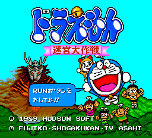
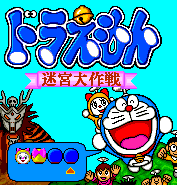
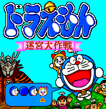
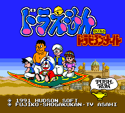

Doraemon - PC-Engine Games

Controls
- I button: [not used]
- II button: Dig Hole/Fill Hole
- Run: Pause
- Select: [not used]
You run around a maze collecting hamburgers(?). You can dig holes to trap the enemies that
are after you. When the enemy falls in the hole, you can cover the hole and kill the enemy and
giving you bonus points at the end of the level. Once you have collected all the burgers, a key
appears; the key must be retrieved to unlock the door that ends the level. Along the way,
bonus items appear in the level. A bee gives you bonus points; there is also some
sort of can that appears. Once you have it, a countdown appears next to the can in
your status bar. Anyone knows what this does? Released as Cratermaze in the US
with the graphics re-done.
From Mike Koos:
| Turns all the enemies into copies of Doraemon |
Access the hard mode of the game |
|  |
 |

From Mike Koos:
Level Select: On the title screen, press Up, 1, 2, Down, 2, 1, Left, Right, 2, 1.
Anime Video Game Resource Center © 1998 by Luis A. Cruz